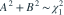

独立且服从N(0,1)，令
独立且服从N(0,1)，令  。哪项正确？
。哪项正确？- AA和B相等
- BA与B独立，且均为N(0,1)
- CA与B不相关但一定不独立
- D

我已思考，展开答案与解析
正确答案：B
- A、B均为正态线性组合，方差都为1，协方差 。
- 两者联合正态，零协方差蕴含独立。
易错提醒“不相关推出独立”需要联合正态等额外条件，不能推广到任意变量。
考后回忆 · 条件重建 · 回忆8、9
依据考试回忆重建；数字、选项和必要条件为补充设定，非原题。
独立且服从N(0,1)，令 。哪项正确？
考后回忆 · 条件重建 · 回忆8、9
依据考试回忆重建；数字、选项和必要条件为补充设定，非原题。